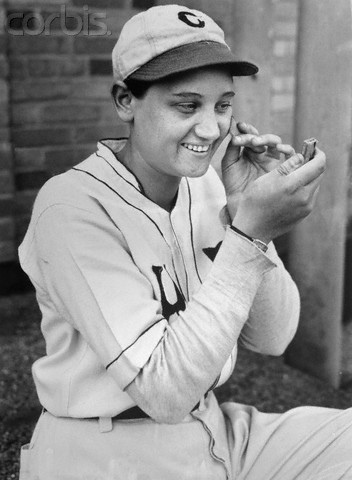
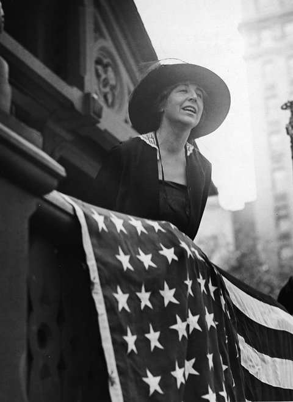
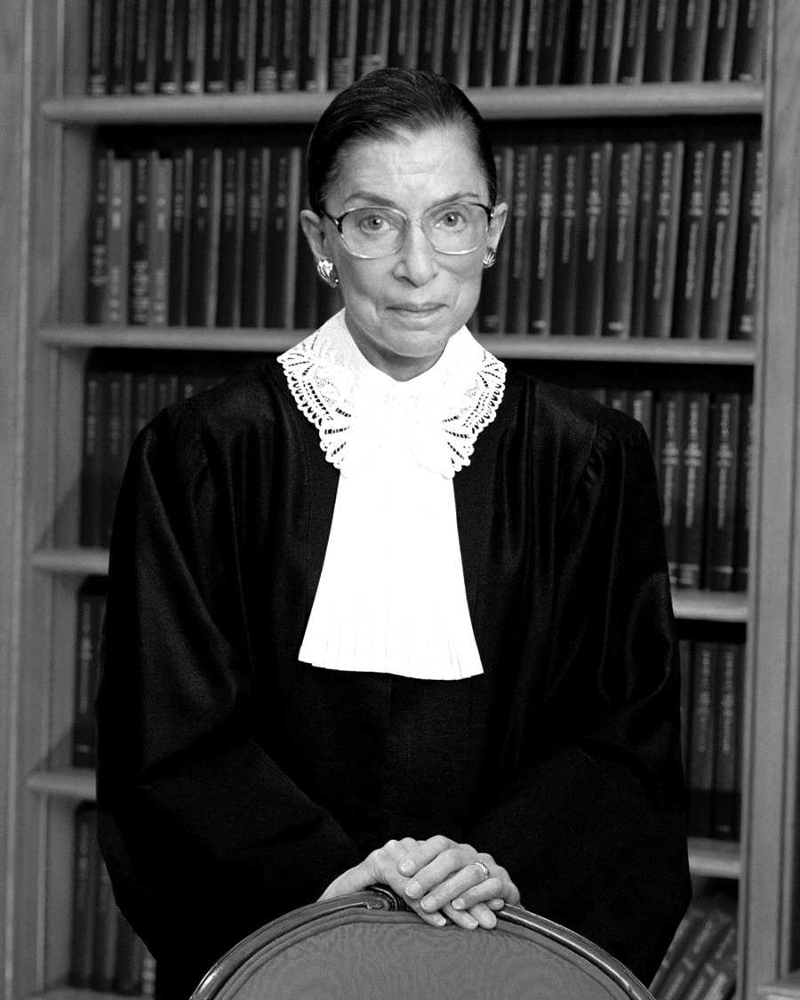
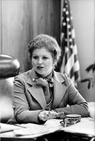

In the 1930s, Bessie Stringfield traveled across America, completely alone, on a harley motorcycle and became the first African-American woman to do so. She rode across the country not once, but twice, only 10 years after women had gained the right to vote. Many of the roads were unpaved, since highways were introduced in 1956. But this only posed half of the challenges she encountered, the bigger issue remained navigating discrimination and Jim Crow laws. She was often treated as a second class citizen, especially in the deep south, when motels denied her accommodation and she either stayed with black families or slept in gas station parking lots on her bike and with her jacket as a blanket. Her favorite game was tossing a penny on a map and traveling wherever it landed, which she funded by performing stunts at local carnivals. Stringfield became an asset to the United States government during World War II as a motorcycle dispatcher rider, the only woman in her unit, carrying messages between bases even as a civilian. In 2002, she was inducted into the Motorcycle Hall of Fame.
(1913-1987)
Fast-pitching teen strikes out major league icons

In April 1931, the impossible happened. 17 year old Jackie Mitchell, went to bat against the famous players Babe Ruth and Lou Gehrig. She pitched her legendary sinking curveball, and struck both of them out before the first inning was over. Babe Ruth glared and verbally abused the umpire before being led away by his teammates to sit to wait for another batting turn, while the crowd roared for Jackie. At age 16, Jackie Mitchell had already playing for an all-girls team in Chattanooga and came to the attention of Joe Engel who signed her to pitch for minor league team The Lookouts. All in what was believed to be the first professional signing in baseball for a woman. Joe Engel was known for using publicity stunts as a way of distracting from The Great Depression, and booked the New York Yankees in an exhibition game. When Jackie learned how to walk, her father took her to a baseball diamond and taught her the basics of the game. Her next door neighbor, Dazzy Vance, was another major leaguer who taught her to pitch and showed her his “drop ball”, which was a deadly pitch and even deadlier because she had a left-handed throw. Unfortunately, following her feat the commissioner voided her contract and women were banned from baseball on the grounds that that game was “too strenuous for women”. Because sexism exists, many thought the game was rigged and Jackie retired in 1937.
First woman to be elected, even before women could actually vote

On November 7, 1916, Jeannette Rankin was elected to the house of representatives as the first woman to be elected into office. The catch was, she was elected by men. Women wouldn’t even have the right to vote until 1920. She helped pass the 19th Amendment, which gave women the right to vote. She was a dedicated pacifist, and the only congressperson to vote against both World War. She fought for the rights of women involved in the war efforts. In 1917 she proposed the Committee on on Woman Suffrage and became the appointed leader.
(1956-)
The Astronaut who does it all
On September 12, 1992, Mae Jemison was blasted into space on the endeavor space ship. But becoming the first African-American woman launched into space wasn’t enough or her, and her achievements could go on. In addition to being a doctor, a peace corps volunteer, and a teacher, she also founded two tech companies. She was a good student as a kid, and ended up attending Stanford University at the age of 16 where she majored in Chemical Engineering and African-American studies. After seeing another woman, Sally Ride, get launched into space, Mae was encouraged to apply to NASA. She left NASA in 1993, to teach at Dartmouth and then found her own company called the Jemison Group. Their goal was and still is to encourage a love of science and technology in women.
(1933-)
“My mother told me to be a lady. And for her, that meant be your own person, be independent.”

(1945-1968)
The woman who gave women around the country the power to choose

Forty-four years ago, the Supreme Court made a decision in Roe v. Wade, making abortion legal in all 50 states. The case essentially recognized that the constitutional right to privacy that women hold should be extended to personal medical decisions. Sarah Weddington, a 26 year-old lawyer at the time, argued her case for legalized abortion. She was raised in a religious family, and was one of 5 women in her class of 120 at University of Texas law school. In 1972, while arguing for Roe v. Wade, she also ran for and became the first woman elected to the Texas House of Representatives from Austin. She served three terms, working for women’s rights, reforming rape statutes, passing an equal credit bill for women, blocking anti-abortion legislation, and education and discrimination.